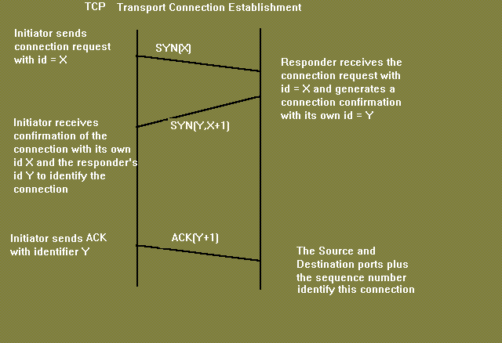
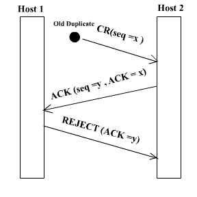
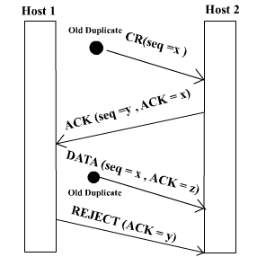
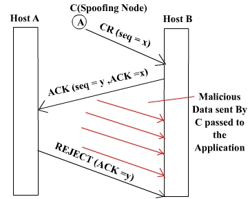

TCP was specifically designed to provide a reliable end to end byte stream over an unreliable internetwork. Each machine supporting TCP has a TCP transport entity either a user process or part of the kernel that manages TCP streams and interface to IP layer. A TCP entity accepts user data streams from local processes, breaks them up into pieces not exceeding 64KB and sends each piece as a separate IP datagram. Client Server mechanism is not necessary for TCP to behave properly.
The IP layer gives no guarantee that datagram will be delivered properly, so it is up to TCP to timeout and retransmit, if needed. Duplicate, lost and out of sequence packets are handled using the sequence number, acknowledgements, retransmission, timers, etc to provide a reliable service. Connection is a must for this service.Bit errors are taken care of by the CRC checksum. One difference from usual sequence numbering is that each byte is given a number instead of each packet. This is done so that at the time of transmission in case of loss, data of many small packets can be combined together to get a larger packet, and hence smaller overhead.
TCP connection is a duplex connection. That means there is no difference between two sides once the connection is established.
The "three-way handshake" is the procedure used to establish a connection. This procedure normally is initiated by one TCP and responded to by another TCP. The procedure also works if two TCP simultaneously initiate the procedure. When simultaneous attempt occurs, each TCP receives a "SYN" segment which carries no acknowledgment after it has sent a "SYN". Of course, the arrival of an old duplicate "SYN" segment can potentially make it appear, to the recipient, that a simultaneous connection initiation is in progress. Proper use of "reset" segments can disambiguate these cases.
The three-way handshake reduces the possibility of false connections. It is the implementation of a trade-off between memory and messages to provide information for this checking.
The simplest three-way handshake is shown in figure below. The figures should be interpreted in the following way. Each line is numbered for reference purposes. Right arrows (-->) indicate departure of a TCP segment from TCP A to TCP B, or arrival of a segment at B from A. Left arrows (<--), indicate the reverse. Ellipsis (...) indicates a segment which is still in the network (delayed). TCP states represent the state AFTER the departure or arrival of the segment (whose contents are shown in the center of each line). Segment contents are shown in abbreviated form, with sequence number, control flags, and ACK field. Other fields such as window, addresses, lengths, and text have been left out in the interest of clarity.
TCP A TCP B
1. CLOSED LISTEN
2. SYN-SENT --> <SEQ=100><CTL=SYN> --> SYN-RECEIVED
3. ESTABLISHED <-- <SEQ=300><ACK=101><CTL=SYN,ACK> <-- SYN-RECEIVED
4. ESTABLISHED --> <SEQ=101><ACK=301><CTL=ACK> --> ESTABLISHED
5. ESTABLISHED --> <SEQ=101><ACK=301><CTL=ACK><DATA> --> ESTABLISHED
Basic 3-Way Handshake for Connection Synchronisation
In line 2 of above figure, TCP A begins by sending a SYN segment indicating that it will use sequence numbers starting with sequence number 100. In line 3, TCP B sends a SYN and acknowledges the SYN it received from TCP A. Note that the acknowledgment field indicates TCP B is now expecting to hear sequence 101, acknowledging the SYN which occupied sequence 100.
At line 4, TCP A responds with an empty segment containing an ACK for
TCP B's SYN; and in line 5, TCP A sends some data. Note that the sequence
number of the segment in line 5 is the same as in line 4 because the ACK
does not occupy sequence number space (if it did, we would wind up ACKing
ACK's!).

Simultaneous initiation is only slightly more complex, as is shown in figure below. Each TCP cycles from CLOSED to SYN-SENT to SYN-RECEIVED to ESTABLISHED.
TCP A TCP BQuestion: Why is three-way handshake needed? What is the problem if we send only two packets and consider the connection established? What will be the problem from application's point of view? Will the packets be delivered to the wrong application?
1. CLOSED CLOSED
2. SYN-SENT --> <SEQ=100><CTL=SYN> ...
3. SYN-RECEIVED <-- <SEQ=300><CTL=SYN> <-- SYN-SENT
4. ... <SEQ=100><CTL=SYN> --> SYN-RECEIVED
5. SYN-RECEIVED --> <SEQ=100><ACK=301><CTL=SYN,ACK> ...
6. ESTABLISHED <-- <SEQ=300><ACK=101><CTL=SYN,ACK> <-- SYN-RECEIVED
7. ... <SEQ=101><ACK=301><CTL=ACK> --> ESTABLISHED
Simultaneous Connection Synchronisation
Problem regarding 2-way handshake
The only real problem with a 2-way handshake is that duplicate packets from a
previous connection( which has been closed) between the two nodes might still be
floating on the network. After a SYN has been sent to the responder, it might
receive a duplicate packet of a previous connection and it would regard it as a
packet from the current connection which would be undesirable.
Again spoofing is another issue of concern if a two way handshake is used.Suppose
there is a node C which sends connection request to B saying that it is A.Now B sends
an ACK to A which it rejects & asks B to close connection.Beteween these two events
C can send a lot of packets which will be delievered to the application..
|  |  |  |
Some Conventions
1. The ACK contains 'x+1' if the sequence number received is 'x'.
2. If 'ISN' is the sequence number of the connection packet then 1st data packet has the seq number 'ISN+1'
3. Seq numbers are 32 bit.They are byte seq number(every byte has a seq number).With a packet 1st seq
number and length of the packet is sent.
4. Acknowlegements are cummulative.
5. Acknowledgements have a seq number of their own but with a length 0.So the next data packet have the
seq number same as ACK.
Connection Establish
Connection Release